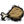
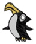
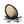
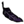
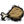
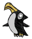

(If one was hidden)
| Pengull | |
|  |
|
| Health | 150 |
| Damage | 33 |
| Attack Period | 3 |
| Attack Range | 2.5 |
| Walking Speed | 2 |
| Special Ability | Hides  |
| Loot | 20%  (If one was hidden) |
| Spawns from | Ocean |
| DebugSpawn | "penguin" |
| “ | What a classy bird. | ” |
| –Wickerbottom | ||
Pengulls are usually neutral Mobs. Pengulls will appear on shores in packs of around 7 to begin with in Winter. The colony size will continually grow until towards the end of Winter. They spawn in the Ocean and jump onto the shore only if the player is nearby. Should the player attempt to attack a Pengull, the entire colony will slide on their bellies towards the player, surrounding them if they stay to fight, and pursuing the player if they flee. Pengulls deal 33 damage and may drop a Jet Feather, Morsel, or Drumstick.
Pengulls are considered innocent creatures, and killing one will add 2 naughtiness points, which can cause Krampus to appear.
The Pengull appears to be a combination of a penguin and a seagull; they have the black-and-white body and upright stance of a penguin but the hooked beak of a gull. They have upturned heads, giving the impression of a sneer or disapproval. Pengulls have been described as "snooty", "fragile", and "dapper" (quote: "nice tux").
Multiple Pengull breeding grounds marked on a map.
Once they reach their breeding ground, Pengulls will occasionally lay Eggs, which they will hide if the player moves closer to them. Should they be 'hiding' an Egg from the player, Pengulls will drop this Egg upon death. The Eggs do not hatch into a Pengull; instead, they either rot on the floor or rot while being hidden by a Pengull. A Pengull that has held onto an Egg until it rots will drop the Rotten Egg on the ground and ignore it. This means Rotten Eggs can be obtained without a Birdcage. Occasionally, they will leave the egg when it's stale, allowing it to be eaten. It's safe to pick up a Pengull's egg if the player goes near and it doesn't hide its egg, or when the Pengull is asleep. It is also a good idea to set up near a breeding ground in the adventure chapter, "The King of Winter" for an easy food source.
Should anyone venture too close near the end of their lives (the "end of their life" would be approximately 3 days before the end of winter, give or take), a Pengull will sound the alarm, and nearby Pengulls will rush their target; it is not necessary for their target to be a mob, as they will display this behavior against a piece of wall if it is in range. During such an attack, Pengulls will pursue on their bellies a reasonable distance before issuing a final indignant squawk and slowly waddling back to their temporary home. Since their lifespan is similar to the perish time of their eggs, caution is best utilized after their eggs are stale and close to spoiling. At the end of their lives, Pengulls despawn as though killed, and will leave drops such as morsels, drumsticks, and jet feathers, as well as their eggs, which will usually but not always turn rotten by this time.
As mentioned above, the nesting grounds of a group of Pengulls is visible as a patch of ice, which will appear when the corresponding flock of Pengulls comes to shore. These patches are marked on the map by a Pengull icon. When the birds come ashore, they will immediately migrate to that ice patch, and they will stay there for the duration of the winter. If there are walls on the ice, they will attack the walls. Since there is no way to control where a Pengull breeding ground spawns, it is possible for a Pengull breeding ground to spawn on the walls of, or even inside, a player-made settlement; they will destroy any walls directly between them and their breeding ground as they migrate, and as they also turn aggressive towards the end of the winter, they can wreak destruction on player-built walls comparable to a grazing by the Deerclops. There is no way to avoid or control this, apart from staying away from the ocean entirely during the winter.
Pengulls will eat food left on the ground, including meat from their killed brethren, and even Hatching Tallbird Eggs. They will also eat planted Mandrakes.
In the Reign of Giants DLC, whenever Pengulls spawn, numerous Mini Glaciers will appear near their breeding grounds. This makes Ice renewable and makes Rocks renewable without having to visit the Caves.
If any of Mini Glaciers around a breeding ground is mined before Pengulls reach it, the group of Pengulls will not lay Eggs as well as a pengull icon disappears from world map.
An effective way of obtaining drops from the Pengulls without being mobbed by the flock is to chase one away from the group until the Pengull calls can no longer be heard before attacking. Be warned, though. Returning to the flock, or any flock nearby, while the danger music is playing will cause the Pengulls to attack you. You can also move a Pengull away from its group while it is sleeping by pushing it with your character. If a group is by several trees, you can try igniting the trees to kill the pengulls. Note that the items they drop upon death may catch fire and burn into ash, however eggs are currently fireproof.
A quick way to get plenty of Eggs in Winter is to plant 9 trees at each breeding site (indicated by the Pengull icon on the map) and light the trees once germinated and the Pengulls have settled in with their eggs. Most likely, feather drops will be converted to ash, but the eggs will survive intact and the morsels and drumsticks will become cooked. This yields approximately 8 to 10 eggs per breeding site. A more practical way is to plant 4 trees towards the middle of the breeding site. Although some Pengulls remain, a majority will be killed and more feathers survive the fire.
Another effective strategy requires gunpowder, by now you can acquire Rotten eggs either via a bird cage, or from the nesting grounds themselves (Recommended that you go at night to avoid possible pengull aggression). Come to their nesting ground at night and plant the powder. One should be enough, you don't have to kill all of them but try to catch as many in the blast area as possible. The steps in this strategy are:
1. Place Gunpowder amongst sleeping Pengulls ( You can push the gulls close together by walking into them.)
2. Light Gunpowder with a Torch,
3. Run a safe distance, you have a few seconds before the powder goes off.
4. Pengulls close to the gunpowder will die, any others will quickly go back to sleep.
5. Return to the now rather depleted nesting grounds. The Pengulls that did not die will still be asleep.
6. Collect profit in the form of cooked meats, eggs and possible feathers/ash.
Pengulls respawn almost daily so this can be an effective strategy for so long as you have Nitre for making the powder. More can be claimed from rounded boulders or from Caves.
Another entertaining strategy to farm Pengulls, albeit mildly dangerous, is to find a Killer Bee Hive and wait for Pengulls to spawn nearby. Once a sizable amount have made there way to a close by location, proc the Killer Bees to chase you, then kite them over to the Pengulls, get out of range of the bees and watch the carnage. This will get you honey, a lot of stingers, and plenty of Drumsticks, Jet Feathers, and Eggs. Plus this can be done daily and repeatedly as the Bees will replenish in about a game days time, as well as the Pengulls.
Below is the number of hits it takes with each weapon to kill Pengulls when playing with characters with a default damage modifier. The Weather Pain is not included due to the random nature of its projectile.
| Weapon |
|
|
|
| |||||||
|---|---|---|---|---|---|---|---|---|---|---|---|
| No. of hits for  | 36 | 12 | 9 | 6 | 5 | 4 | 3-6 | 4 or 3 | 3 | 2 | 1 |
")
| Mobs | |
| Hostile Monsters | Batilisk • Cave Spider • Clockwork Bishop • Clockwork Rook • Clockwork Knight • Dangling Depth Dweller • Depths Worm • Frog • Guardian Pig • Ghost • Shadow Creature • Hound (Red Hound • Blue Hound) • Killer Bee • Lureplant • MacTusk • Merm • Mosquito • Spider • Spider Warrior • Spitter • Tallbird • Tentacle (Big Tentacle • Baby Tentacle) • Wee MacTusk • (Birchnut Treeguard • Varg |
| Boss Monsters | Ancient Guardian • Deerclops • Spider Queen • Treeguard • (Bearger • Dragonfly • Goose |
| Neutral Animals | Bee • Beefalo • Bunnyman (Beardlord) • Koalefant • Krampus • Pengull • Pig (Werepig) • Rock Lobster • Snurtle • Slurtle • Smallish Tallbird • Splumonkey • (Buzzard • Catcoon • Volt Goat |
| Passive Animals | Baby Beefalo • Butterfly • Chester • Crow • Gobbler • Mandrake • Rabbit (Beardling) • Redbird • Smallbird • Snowbird • (Glommer • Moleworm |
| Other | Abigail • Charlie • Maxwell • Pig King |

{kind=link}
{kind=link}
{kind=link}
{kind=link}
{kind=link}
{kind=link}
{kind=link}
{kind=link}
{kind=link}
{kind=link}